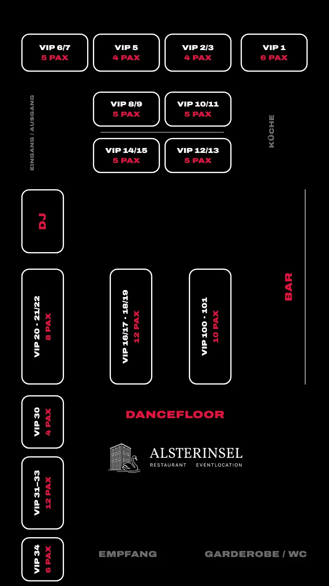

Sa|21. NovemberPhase 1
Cherry Moon
x Coda
ab 10,99 €inkl. 0,99 € Servicegebühr
Ticket kaufen für Cherry Moon x Coda (öffnet den Ticketshop)Tanz in den Mai Special auf der Alsterinsel: Cherry Moon holt den Mai mitten auf der Alster ab. Ab 23 Uhr House, Drinks und eine Nacht bis in den ersten Maimorgen.
Tickets sind vom Umtausch ausgeschlossen. Warum das so ist · Fragen an info@cherry-moon.de
14 Tische für diese Nacht. Such dir einen aus und schreib uns, wir bestätigen dir den Tisch.
WhatsApp öffnet sich mit einer vorbereiteten Nachricht. Du musst nur noch Personen und Namen ergänzen und abschicken.

ab 10,99 €inkl. 0,99 € Servicegebühr
Ticket kaufen für Cherry Moon x Coda (öffnet den Ticketshop)ab 21,99 €inkl. 1,99 € Servicegebühr
Ticket kaufen für Silvester x Cherry Moon (öffnet den Ticketshop)